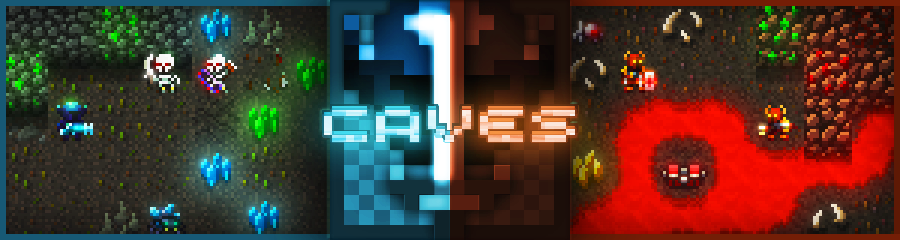

Пошаговый темп
Каждый ход важен: позиционирование, энергия, выживание и выбор использования предметов имеют значение.

Классическая пошаговая игра в жанре roguelike с пиксельной графикой. Главная особенность игры - пещеры, которые можно проходить, копая их киркой. Здесь сочетаются магия и высокие технологии.
Пошаговые бои, разрушаемые пещеры, магия, высокие технологии и постоянный риск потерять все.
Об игре
Каждый ход важен: позиционирование, энергия, выживание и выбор использования предметов имеют значение.
Даже после смерти часть ресурсов и улучшений помогает вернуться лучше подготовленным к следующему забегу.
Навигация по вики
Рекомендуемые пути